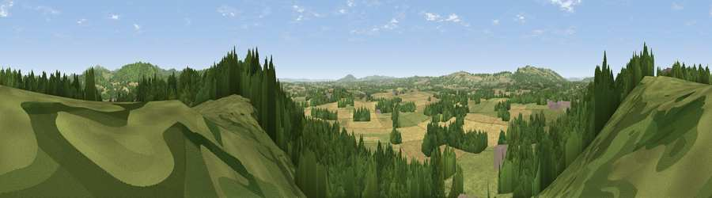

Viewpoint near Ledbury
#12689 in England · top 34% of its area beats it · near LedburyThe view, rendered

A 360° render of this exact spot computed from the terrain model, tree cover and land cover — summer colours, afternoon light, calibrated against photographs of famous viewpoints. Real trees, hedges and buildings will differ in detail.
The panorama
Grey silhouette: terrain skyline in each direction (720 bearings, Earth curvature and refraction included). Dashed green: skyline with trees (+15 m) and buildings (+8 m) as obstacles. Blue strip: how far the ground is visible on each bearing.
Where the view opens
Wedge length = distance to the farthest visible ground on that bearing (vegetation-aware). Rings at 10, 25 and 50 km.
What fills the view
47% woodland · 29% grassland · 22% cropland · 2% built-up
Angular shares of the visible panorama (visual magnitude), not map area. Landscape diversity 0.50 (0–1 Shannon).
Key numbers
More beautiful places nearby
The staircase of upgrades: each row has a higher view potential than everything closer. Driving times are estimates from straight-line distance, calibrated against real road routing — check an actual route before setting out.
| Place | Direction | Drive | Score |
|---|---|---|---|
| Viewpoint near Wellington Heath | ENE · 3 km | ~8 min | 73.6 |
| Viewpoint near Eastnor | ESE · 5 km | ~11 min | 75.3 |
| Viewpoint near Coddington | NE · 5 km | ~11 min | 76.4 |
| Viewpoint near Putley | W · 6 km | ~12 min | 80.9 |
| Viewpoint near Tarrington | W · 7 km | ~14 min | 81.4 |
| Seagar Hill | W · 7 km | ~15 min | 82.1 |
| Midsummer Hill | E · 7 km | ~15 min | 83.0 |
| Millennium Hill | ENE · 8 km | ~15 min | 86.9 |
52.04108, -2.45884 · source: screening · position refined by local search. Computed location — check access rights before visiting.